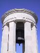
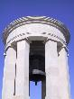
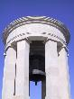

Look at the photos

Look at the photos
Why Malta?
Well to be honest we wanted to go away somewhere warmer than the UK between 2 Jan and 5 Jan (before I started my new job on the 7th) and when we were booking in December getting a flight back on the 5th was hard. Our first choice was Lisbon but the flights weren't available - see the blog for more of a rant about this. When we called Crystal Cities, Malta was one of the only places we could get. So, that was that. We had considered Malta so it wasn't a complete change of plan.
Wed 2 JanThe alarm went off at 5:39 and we got ourselves up and moving and left the house at just before 6:30. There had been a heavy frost overnight but we were fortunate and our drive to Heathrow was fairly easy. We had prebooked parking at the Parking Express long term parking and so found ourselves a space eventually (it was really busy). The bus came along soon and we got to terminal 4.
The documentation we'd had from Crystal Cities told us to check in 3 hours before the flight. That is why we'd left so early. The check in monitors said that check-in was at 9:20 - it was now 8:30. We decided to make use of our time and changed some money into Maltese currency and then went in search of breakfast.
We found breakfast in a Weatherspoons pub and I started to take a look through the Rough Guide to Malta (we didn't really know much about the island). We checked in for the flight and then joined the queue to go through into departures - the security clearance takes longer these days. We had a bit of time for shopping and bought a couple of DVDs before heading to the gate.
We boarded the plane and took off a little later than scheduled. The flight was fine, not much leg room but it wasn't for long - 2.5 hours only (my last flight was 26 hours to New Zealand, and until the end of November I was travelling 1.5 hours just to get to work). We were handed a copy of the Malta Independent newspaper which occupied me for a little while. I think it was one of the Bill Bryson books which says that reading the local newspaper is a wonderful way to get a feel for a place. I guess we agree as we often do so now. From the Independent I realised just how small a place Malta is.
We arrived at Malta airport and stepped off the plane and into sunshine which had a bit of heat to it (around 11 deg c) - the recent weather in Brighton has been cold but bright. We went through Passport control, collected our bag, went through customs and then met our driver. About half an hour later we arrived at the Corinthia Marina hotel in St George's Bay having dropped people off at Msida and Sliema. We checked in to what looks like a pleasant hotel and sat in our room and looked at the various leaflets and maps that we'd been handed.
We decided to go for a brief explore of the Corinthia Beach Resort and found some restaurants and many pools (mostly outdoor although there is an indoor pool, spa and sauna in the Apollo Club). We had a good look around before heading back to reception to get a safety deposit box lock and key.
It was time for a rest, so we liberated a couple of beers from the mini-bar and read some of the guidebook before having a bit of a snooze.
We headed off in search of food and were disappointed to find that Tapa Tapa (Spanish tapas bar) was closed this evening. We took a wander around the other hotel eateries and ended up at Vinotheque where we had a half bottle of Maltese Cabernet Sauvignon and I had salmon (which had so many bones that eating it wasn't very enjoyable - being stabbed in the gum by a salmon bone isn't the best experience!) whilst Rich had a house platter (cheese, pate and ham with bread).
Thur 3 JanWhen we were met at Malta Airport yesterday we were handed an envelope which told us that our rep Tanya would see us at 9am today. So, we set an alarm and got up and were downstairs in reception at 9. No sign of her. We asked at reception and were told to go to breakfast as she'd hang around for us. So we went through and had a breakfast of bread with cheeses and meats (we couldn't face another cooked breakfast today) with some juice and tea. We sat around at reception and there was still no sign of Tanya (she represents United Travel who handle crystal holidays here). We waited for quarter of an hour or so before giving up and heading back to the room. At 10am the phone rang, Tanya had arrived. We took our return flight tickets down to her so she could confirm them for us and got told the time for our pickup on Saturday - 3:45pm. We asked about buses to Mdina and were told that the number 65 from Valleta or Sliema would take us there.
Unfortunately it was an overcast and rainy morning but we decided we'd still explore the towns around and about. We took the map of the area from the "Island Life" magazine in the room and headed off.
We left the hotel and watched a guy with a tractor removing the seaweed from the sand at the end of St George's Bay. Our first stop was the bay street mall. We had a wander around and popped into Chaucers to get a copy of todays "The Malta Independent". This allowed us to get some smaller change.
We headed around the bay and walked through the Paceville district of St Julian's. We stopped at a Supermarket down Triq Wilga and bought a couple of soft drinks and some more tissues. We wandered along and got to Portomaso (the tallest building in Malta - a glass office block) and the Malta Hilton. We wandered down Triq Il-Kinisja and headed down some steps to end up at Spinola Bay.
Spinola Bay is full of fishing boats, mostly painted in bright colours and with the "Eye of Osiris" painted on the bow. The eye is believed to help ward off evil, bad omens and bad luck while at sea.
We carried along Triq Gorg Borg Olivier and were stopped by a couple of people. They asked us some questions about our stay and persuaded us to go to the Hotel Lapsi to listen to the timeshare presentation - this would take an hour, and in return we'd get a cup of tea and a bottle of gin and a bottle of wine. The 2 kidnappers would get £10 to share. As it was raining we went in and answered more questions while Carl gave us the sell. It seems like a good idea but it wouldn't suit us really - we're still enjoying the make it up at we go along phase and haven't progressed to being able to decide in January how many weeks holiday we'll want. The scheme is with RCI and the idea isn't to return to Malta every year, but to swap through the space bank and go to new places (all 4 or 5 star places). We had a tour of the Lapsi and were then told the up front costs (£2200 ish) before leaving (2.5 hours later), by which time it had stopped raining.
The Lapsi is in Balluta Bay and so we headed on to Sliema down Triq Manwel Dimech and then down Santa Elena and Triq Sir Adrian Dingli (a long cut as it turned out). We walked along Triq It-Torri, past the Sliema Point Battery - Malta's only Gothic Revival military building - which has a TGI Fridays and an Itallian restaurant in it. We continued to the Bus terminus and ferry terminal and decided to stop for food (it was 4pm by now). We ate at the "magic kiosk" and both sampled a local beer "hopleaf" and had fish burger and chips.
After food we decided that it was time to head off back to the hotel. It took us around 40 minutes and so we managed to get back before it got too dark.
I could finally take my wet shoes off and had to stuff them with yesterdays paper to attempt to dry them. We had a rest and a snooze and a read of the paper before going in search of dinner.
We tried Tapa Tapa for dinner. This is another eatery in the complex and frankly we were disappointed. We're used to tapas places with long lists to choose from - not just 8, and we're used to ordering 4 or 5 dishes and not being able to finish them. We had 2 plates of 4 tapas, and waited for the dessert menu which never appeared. There was a power cut (which wasn't mentioned in the newspaper although many others were) We eventually got the bill and headed back to the room.
Fri 4 JanWith no rep to see this morning we slept a bit longer and made our way down to breakfast at 9:30. One of the items in the hot food section was pastizzi - pockets of puff pastry filled with mashed peas.
At 10:30 we joined the queue of people waiting outside the hotel front door for the courtesy bus to Sliema and Valletta. There were quite a lot of people waiting and the hotel bus was running late, and so when we saw the service bus appear we all made a dash for that. So, we found ourselves on the number 66 bus heading to Valletta for 15cents. Maltese buses aren't going to win any prizes for comfort but at least they are pretty cheap. It took around 30 minutes to get to the terminus at Valletta - lots of buses all just displaying numbers on their front, no place names or anything. The bus we thought we wanted didn't seem to exist here (we found out later that it is from Sliema only) so we asked at the information kiosk and found that the number 80 or 81 would take us to Mdina. Another 15cent fare for about a 30 minute journey and we got off at Rabatt (the 81 continues to Dingli). We managed to start to head the wrong way before a helpful local gave us directions.
We walked through Howard Gardens and into Mdina. Mdina used to be the capital of Malta from 800BC until 1568. In 1693 an earthquake damaged almost half of the city and a slow rebuilding program started. We entered through the Main Gate (constructed in 1724 as part of the restoration programme). Typically we managed to arrive at Mdina at 12ish so everything was closing down for several hours (everything seems to close from 12 or 1 to 2 to 4). We walked around at looked at the outside of St Paul's Cathedra, the Cathedral Museum and many other buildings before stumbling into Fontanella Tea Gardens for a warming cup of tea - today the sun has been shining but it is still very cold to be wandering around looking at architecture.
We read up about Mdina in the warmth of the tea rooms and then took another walk around spotting some more buildings. St Paul's Cathedral wasn't due to open again until 2pm, and Palazzo Fanton - an example of Norman architecture dating from 1495 - wasn't due to open until 2:3 and we were too cold to wander around for much longer. We debated getting the number 81 to Dingli to look at the cliffs and to see the Clapham Junction Cart Ruts - sets of parallel pairs of ruts furrowed into the rocky surface - but instead we decided to get the number 65 bus to Sliema.
This decided we headed to the bus terminus and didn't have too long to wait before the 65 arrived. This journey constitutes a specalized route and so costs 40cents. This journey took us from Mdina through Mosta, through some really narrow streets and then stopping and giving us a really good view of the parish church of Santa Marija. This is known as the Mosta Dome and is a circular church rather than the more usual crucifix shaped. It is claimed that it is Europe's third largest dome (the others being the Pantheon and St Peter's in Rome) but measuring domes is an inexact science. We then headed through Naxxar before starting to head into St Julians. We recognised the huge glass office block of Paceville and so got off the bus there so we didn't have as far to walk.
We wandered through the streets and decided to eat at a place called "the avenue" which we later found was mentioned in the rough guide. It was a pizza/pasta/grills kind of place and we ordered a half bottle of Maltese Cabernet Sauvignon and both decided we'd have a pizza before being told that pizzas were off today. We chose again and we both had pasta dishes which were very generous and filling.
We left Paceville and started to walk back towards St George's Bay. We stopped at Bay Street mall again and picked up todays copy of the Malta Independent before going back to the hotel.
The San Gorg hotel has a health club and so we spent a bit of time in the swimming pool and the jacuzzi. Then back to the hotel room for a snooze before dinner.
We wandered back towards Bay Street and wandered into Paceville by the back streets passing lots of pubs and clubs. We stumbled across Arthur's Place, a restaurant specialising in maltese cuisine. We wandered in and discovered it was a theme restaurant, the theme being horses - we were sat in something that resembled a stable. We ordered a bottle of La Valette - a local red wine - and starters. I had baked macaroni and Rich had garlic bread. I thought mine was okay until Rich pointed out that it seemed a bit microwaved. For main course I had Lampuki pie (Lampuki with peas, sweetcorn, spinach with a fatty filo pastry top), whilst Rich had stuffed fish - this time we heard the "ping" of a microwave. So, quite dissapointing really. Maybe that's why there aren't many Maltese restaurants! Rich believes this is the worst restaurant he has ever eaten at.
We walked back to the hotel passing lots of clubs and quite a lot of police outside them. Paceville is one of the top nightlife venues on the island.
Sat 5 JanAgain the alarm went off at 9, and we got ourselves ready and headed down to breakfast. We were a little later today and were still there as they started clearing away. We went up to our room and started to sort our bags out. We headed downstairs and checked out of the room, and left our main bag at the hotel till later.
We'd decided to visit Valletta today but by the time we'd sorted everything out we'd missed the courtesy bus and the next number 66 was 20 minutes or so away. It was a lovely day so we decided to walk to Paceville via the coast road. We got the number 62 bus from Paceville to Valetta and again it got really full as it approached Sliema.
We arrived at the bus terminal at Valletta and walked through the City gate. We walked through Freedom Square, catching a glimpse of the ruins of the Royal Opera House, and continued down Triq Ir-Repubblika until we reached Fort St Elmos and the end of the land. Fort St Elmos didn't open until 1pm according to the Rough Guide so we had about 50 minutes to fill. We wandered along Triq Il-Mediterran in both directions, firstly towards the War Museum (stopping to poke our heads around the gates) and then back towards the World War II monument. This monument is really lovely and has a bell which rings at noon everyday. After spending a little while wandering around it, and looking out at the views we walked around to the Lower Barakka gardens where we passed a bit more time sitting in the sun. Everywhere we walked there were men touting their horse drawn carriage rides around the City, and every time we got hassled, and had to say No several times.
We headed back to Fort St Elmos and discovered that it actually didn't open on a Saturday until 1.10pm, however it did cost only 50cents and not the Lm1 that it said in the book. We entered the Fort and joined the guided tour. The guide had problems with his legs, and so couldn't do as much of a tour as he usually did - this suited us down to the ground as we knew we were a bit short on time. He told us all about the history of the Fort, and of the battle when the Ottamans tried (and succeeded) to invade Malta. He told us what the highlights of the Fort were, and so we wandered around, walking along the top of the bastilles and looking across towards Sliema and St Julians in one direction, and towards the Three Cities in the other.
At 2pm we headed back to the bus terminal and looked for a number 66. No luck so we got on a number 68 (which goes to St Julians) which got us to Paceville in around 20 minutes. We got off and walked through the streets until we stopped at "Piece of Cake" for chicken burger and chips. This was okay but there were some really lovely looking cakes but unfortunately we didn't have enough time to try one.
We headed back to the hotel and collected our bag. We had a quick sort out of stuff between our hand luggage and our main bag and then our driver arrived.
We got in the car and he drove us along the coast road until got to Sliema. We picked up 2 others at the Victoria Hotel and then headed to the airport. We nearly got stuck in a huge queue but one of our companions spotted that all 10 or so trolleys seemed to belong to one group so we managed to get checked in okay. We picked up a copy of the "Malta Independent" from a newsagent before going through to departures. We picked up a bottle of Plymouth Gin at duty free before spending the rest of of our change on water and cups of tea.
The flight was ok, we left on time and arrived on time. We were given food (almost the same as the flight out actually), and drink. I finished my book and so started reading the in-flight magazine. We listened to the family sitting around us having disagreements and eventually landed. The gantry at the gate wasn't working properly so we had to get off by the back door down some steps, across the ground and into the airport.
As usual at Heathrow, it took an age for the luggage to appear, and I still can't understand why it is that they seem to only have a few of the carousels working and insist on putting the luggage from 3 flights all onto the same one. Especially when I counted at least 2 that weren't currently doing anything. Also, why do people crowd around the conveyor belt so tightly? If everyone stood back a bit, then you could see the luggage coming around and get a chance to grab it, rather than having to fight to get a space. Still, we got our bag, and wandered through customs and out of the airport. We had a short wait for the parking bus, and then got to the car park, found the car without too much trouble - although having a car with remote locking, so it flashes it's lights when you point the remote at it is really useful - and headed back to Brighton, getting in the house at about 11pm.
Back to index page